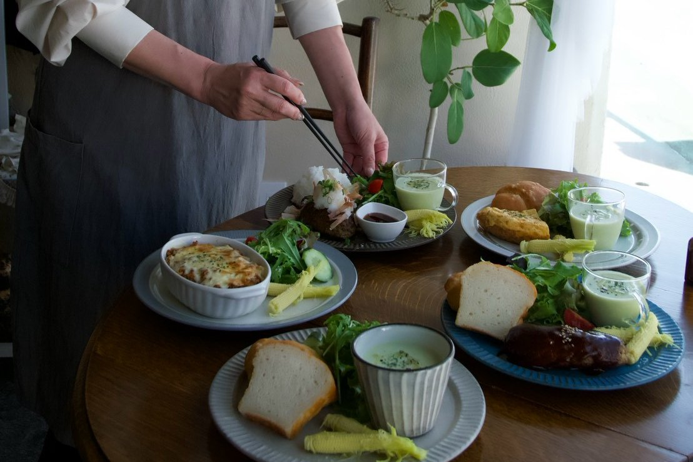
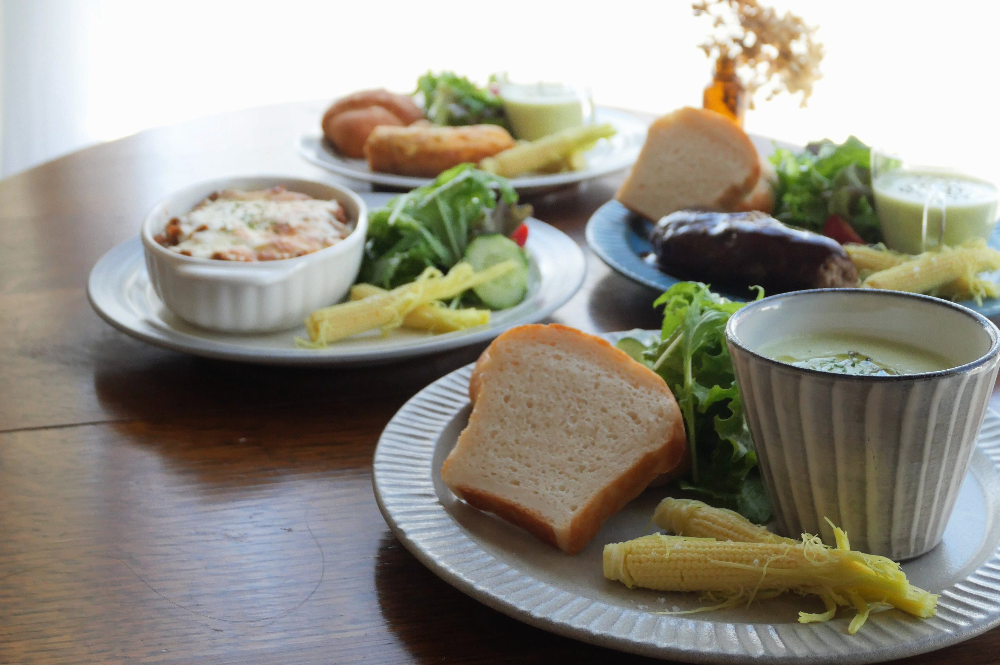
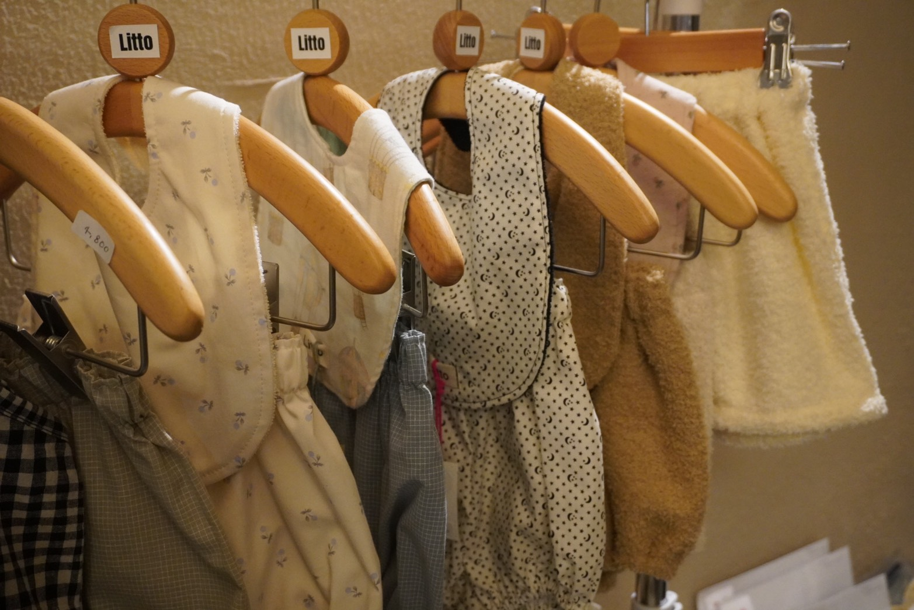

OUR STORY
ひとつのお店から、
一緒につくる場所へ。
CAÄSIUNAとの始まりは、オーナーの陽子さんとのご縁からでした。
KIMMY’S COFFEEとしてイベントやコラボを重ねる中で、人との繋がりを大切にする陽子さんの人柄や考え方、そしてその想いが空気となって広がるお店の雰囲気に惹かれていきました。
そして、「人が自然と集まり、誰かの居場所になるような空間をつくりたい」という共通の想いがあることに気づいていきました。
そして2026年5月からは、KIMMY’S COFFEEも運営に加わり、陽子さんが大切に育ててきたCAÄSIUNAらしさを残しながら、共に歩みを進めています。
新しいメンバー、新しいランチ、そしてmame to komeの米粉パンやスイーツとともに。これからのCAÄSIUNAを、みんなで一緒につくり上げています。

FOOD & BREAD
毎日のランチに、
やさしい選択肢を。
CAÄSIUNAでは、スペイン出身のスタッフ・リディアが作る本場のスパニッシュオムレツやお肉屋さんのハンバーグなど、手作りの温かなお料理とともに、mame to komeで焼き上げる米粉パンをお楽しみいただけます。
添える米粉パンは、「からだに優しいから」という理由だけではなく、ひとつのパンとしてお料理を引き立てるおいしさまで考えて作っています。
また、お店で出会ったお気に入りのパンをご自宅でも楽しめるよう、ランチをご利用の方限定で米粉パンの冷凍テイクアウトもご用意しました。
お店で味わう特別なランチタイムが、ご自宅の朝食や日々の食卓へとやさしく広がっていけば嬉しいです。

PEOPLE & SPACE
いろんな「好き」が重なって、
この場所ができていく。
CAÄSIUNAの空間をつくっているのは、私たちだけではありません。
陽子さんの娘・じゅなちゃんがつくる子ども服ブランド「Litto」のやさしいお洋服、アーティストとしても活動するスタッフ・リディアが描く絵。
そして、食やものづくりを通して出会った、さまざまな人たちとのコラボレーション。
洋服が並んだり、絵が飾られたりしながら、その時々で新しい人やものが重なり、CAÄSIUNAという空間は少しずつ形づくられています。
完成されたひとつの形を目指すのではなく、人との繋がりによって、やさしく変化し続けていく場所。食事をする人も、ものをつくる人も、ここを訪れるすべての人も。それぞれが自然と混ざり合える、そんなCAÄSIUNAでありたいと思っています。
